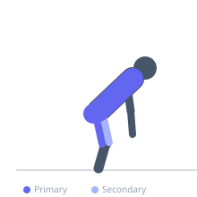

Exercise guide / Snatch-Grip Deadlift
Snatch-Grip Deadlift
The snatch-grip deadlift uses the wide grip position typical of the Olympic snatch, requiring the bar to travel a greater distance and demanding superior upper back and trap strength to maintain position. The wide grip drops the hips significantly, increasing quad, upper back, and trap demands relative to conventional deadlift. It is widely used by Olympic weightlifters and strength athletes to develop postural strength and reinforce the snatch starting position.
Primary muscles
erector spinae
gluteus maximus
hamstrings
trapezius upper
Secondary muscles
quadriceps
latissimus dorsi
rhomboid major
Stabilizers
flexor carpi radialis
transverse abdominis
Equipment
Standard Barbell
Optional
Lifting Straps


Starting position
- Grip the bar with a snatch-width grip — typically hands outside shoulder width, often indexed off the rings on the bar. The wide grip will lower your hips significantly. Maintain a proud chest and neutral spine.
Setup
- Reduce load substantially from conventional deadlift maximum. Wrist straps are recommended due to the wide grip stress on the wrists.
Steps
- Step 1: Set up with the snatch-width grip. The hips will be lower than in a conventional deadlift due to the wider hand position.
- Step 2: Brace the core, retract the scapulae, and set the upper back tight.
- Step 3: Drive through the floor as in a conventional deadlift, keeping the bar close to the body throughout.
- Step 4: Maintain the upright torso position through the pull — this is more quad-dominant than a conventional deadlift.
- Step 5: Lock out hips and knees at the top. Return under full control.
Coaching cues
- Bar stays in contact with the thighs
- Proud chest throughout
- Drive the hips forward at lockout
Breathing
- Valsalva brace before each rep. Exhale at lockout.
Range of motion
- Full hip extension at lockout. The wide grip means the bar hangs lower relative to the hips at the top.
Tempo
- 2-1-1-0
Common mistakes
- Letting the bar drift away from the body — it must stay close due to the wide grip
- Using too heavy a load, which collapses the upper back
- Forgetting the bar travels further — treat it as a training tool at submaximal weights
Safety
- Wrist discomfort is common — use lifting straps
- Requires significant upper back strength and flexibility — master conventional deadlift first
Training
- strength: 2–5 reps
- hypertrophy: 5–8 reps
- strength: 3–5 sets
- Rest: {'strength': 240, 'hypertrophy': 150}